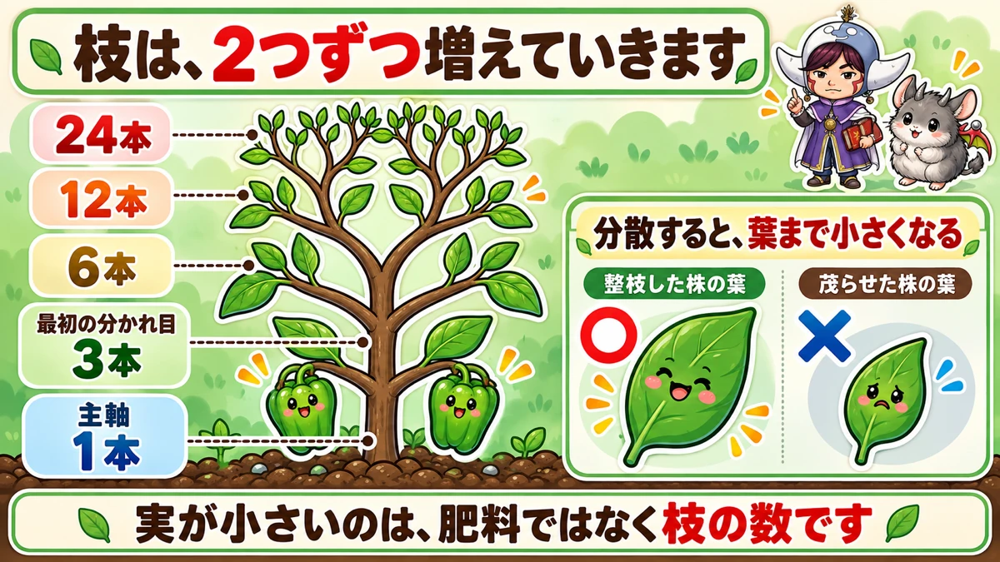
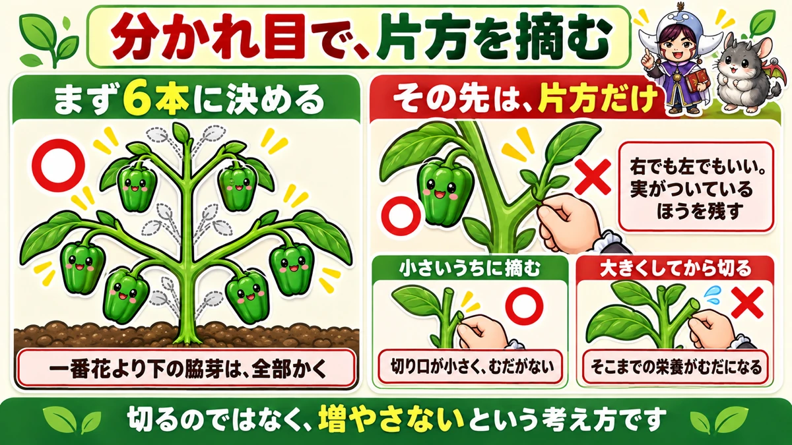
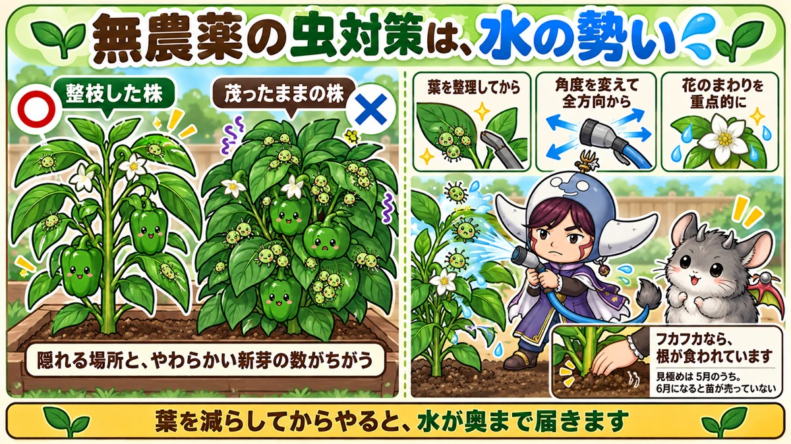

Small peppers mean too many branches 🫑 And pruning cuts the pests too

🫑 "Fruit keeps coming, and every one of them is small."
🫑 "I thought peppers didn't get pests."
🫑 "One plant just refuses to grow."
Hello, I'm Eiko. Eight years of growing vegetables organically and without pesticides, and a teaching licence in science.
The headline:
Small peppers aren't caused by feeding or by light. They're caused by having too many branches.
And reducing the branches reduces the pests at the same time. That's the interesting part.
The spacing is wider than people expect, because you'll be letting the branches spread sideways. Plant at 30 cm and the leaves overlap and it goes stale and humid from the bottom up.
Strip everything below the first flower
A while after planting, the first flower opens. Remove every side shoot below that flower. Leave them and the plant's strength runs downward and the top doesn't develop — the same principle as aubergines and tomatoes.
Pepper branches multiply, two at a time, forever

What this diagram says （図解の文字）
- The branches multiply two at a time
- 1 stem → 3 → 6 → 12 → 24
- "Spread thin, even the leaves get smaller"
- ○ "leaf on a pruned plant" ／ ✗ "leaf on a plant left to bush"
- "Small fruit is the branches, not the fertiliser"
3 → 6 → 12 → 24
As it grows, the main stem first divides into two or three — plants vary, and two is fine.
The problem is what follows. Each of those branches divides into two. And each of those divides again.
Three becomes six, becomes twelve, becomes twenty-four. Left alone, it compounds.
Spread thin, the leaves shrink too
More branches means the resources are divided, so the fruit gets smaller. That much is intuitive.
But it isn't only the fruit. The leaves get smaller too.
A proper pepper leaf is about the size of your palm. Look at the lower part of a bushed-out plant and they're not half that.
Leaves are the factory that makes the food. Shrink the factory and the fruit shrinks further.
Growing organically, more so
Organic fertiliser releases gently — it doesn't deliver a sudden surge the way a synthetic one does. Which means there's less to spread around in the first place, and pruning matters correspondingly more.
The job: at each fork, take one side

What this diagram says （図解の文字）
- At each fork, remove one side
- ○ "first settle on six" ／ "remove every side shoot below the first flower"
- ○ "after that, keep only one side" ／ "left or right, it doesn't matter — keep the one carrying fruit"
- ○ "remove it while it's small"
Settle on six
- Main stem divided into three? Keep two from each — that's six
- Divided into two? Keep two from each — four. That's fine
After that, keep one side at each fork
- Every time a branch forks, pinch one side out at the base
- Left or right doesn't matter
- Keep the one carrying fruit and you never have to think about it
Repeat, and your six branches each run on as a single line — no bushing, and one large fruit at the end of each.
The earlier the better
Pinch them while they're small. Cut a large branch and everything the plant invested in it is wasted, and the wound is bigger.
And done late, the leaves have already shrunk — so you prune and still have small leaves. Rushing to prune in midsummer is a common pattern: it tidies up nicely, and that year's fruit tends to stay small to the end.
Pruning is pest control

What this diagram says （図解の文字）
- No-spray pest control is water pressure
- ○ "pruned plant" ／ ✗ "plant left to bush"
- "Different number of hiding places and soft new shoots"
- "Thin the leaves first" ／ "change the angle, from every direction" ／ "concentrate around the flowers"
Peppers do get pests
I believed they didn't. They do. Aphids, shield bugs, and the caterpillars of tobacco budworm all turn up.
The pruned plants had fewer
This showed clearly in my own plot. Plants put in on the same day: the ones at the near end, pruned early, had few aphids; the ones at the far end, left bushy because I hadn't got round to them, were covered.
The reason is probably simple: a different number of hiding places, and a different number of soft new shoots. More leaves means less wind and less light reaches the inside — comfortable, if you're an insect.
Without sprays: blast them off with water
For pests that have already arrived: turn the hose up and blast them off. Three points:
- Thin the leaves first, so the water reaches inside
- Change the angle and hit it from every direction — from one side, they survive on the far side
- Concentrate around the flowers, where most of them are
"Won't the flowers drop?" Surprisingly few do — rain in a storm is far rougher. And if some do, more will open. Reducing the insects comes first.
Put the netting back afterwards.
Sometimes the culprit is underground
Worth knowing. Everything else is fine and only the peppers refuse to grow. Pale leaves, not even side shoots, and feeding changes nothing.
Take hold of the base and move it
Grip the base of the plant and rock it gently. If it feels loose and spongy, the roots have been eaten.
The culprit is a cutworm — a moth larva that lives in the soil. The thick roots have been severed and it's surviving on fine roots alone. Lift it and the main roots simply aren't there. I lost a plant to this once.
Decide early, while plants are still on sale
The remedy is replacement — spongy means lift it and plant a new one.
And there's a deadline: early in the season the garden centres still have plants. A few weeks later they're sold out.
"I'll give it a bit longer" carried too far means no peppers that year. So judge it early. That's the real remedy.
Science bit: it's a competition for the food 🔬
Why does removing branches make the fruit bigger? In science terms it's tidy.
Leaves are factories making sugar by photosynthesis. Fruit is the recipient.
Too many recipients — fruit and branch tips — for the number of factories, and each one's share falls.
The same meal divided between three people or twenty-four. And adding branches shrinks the factories themselves, so output falls while the number sharing it rises.
Pruning looks like "removing fruit". It's actually "increasing the share per fruit".
To sum up
- ✅ 45–50 cm apart, and strip every side shoot below the first flower
- ✅ Branches divide two at a time: 3 → 6 → 12 → 24
- ✅ Spread thin, the leaves shrink as well as the fruit
- ✅ Settle on six, then remove one side at every fork
- ✅ Pinch while small. Late pruning leaves the leaves already small
- ✅ Unsure? Prune one plant and compare after two weeks
- ✅ Peppers do get pests — and pruned plants get noticeably fewer
- ✅ Blast aphids off with the hose — thin first, all angles, around the flowers
- ✅ A plant that won't grow: rock the base. Spongy = roots eaten
- ✅ Replace it early, while plants are still sold
- ✅ Pruning increases the share per fruit
You don't have to do all of it. Find the bushiest plant and pinch out one side of a single fork. That one cut tells you how it feels 🫑
Thank you for reading!